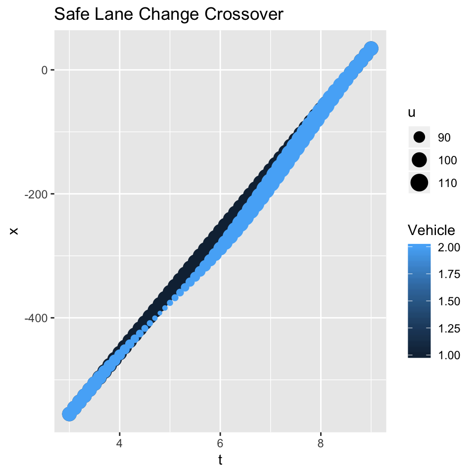

Lane Changing on a Two-lane Freeway
Our attention has focused explaining traffic breakdown at a bottleneck. Drivers, who change lanes on a two-lane roadway, can cause traffic breakdown and congestion. No question drivers must use care when changing lanes to avoid a crash or a near miss. In the simulation shown on this page, we investigate a situation where two drivers are driving side-by-side in lanes 1 and 2. We also assume that the drivers are traveling at identical speeds of \(u\) = 67 mph and both decide to change lanes at the same time. Driver 1 moves right from lane 1 to 2 and driver 2 moves left from lane 2 to l. If neither driver yields, then a crash occurs as shown below at the “crossover point.”
To avoid a crash, the driver on lane 2 yields as shown. Driver 2 slows down and allows driver 1 to pass in front of his/her vehicle. Driver 1 maintains a speed of 67 mph. A crash is avoided. Here we show the driver in the following vehicle to crossover a “safe distance” behind the leader.
What is a “safe distance?” Since we don’t have field measures, we base our assumption and justify it based our experience as a driver. The distance headway is assumed to be 28 feet or two car lengths. In other words, the distance between the back bumper of the lead vehicle and front bumper of our vehicle is one vehicle length or 14 feet. Some people may criticize it as being too close given the speeds of two vehicles are 67 mph. However, the relative speed between vehicles is zero. Are the critics right in claiming that we are not cautious enough?

To address the issue, we will investigate our speed and acceleration using the \(t-x\) trajectory shown above. Note that the speeds on the plot are shown in feet per second. The relative size of the speed bullets give the impression that we may decelerating at a high rate, suggesting that we may be introducing unsafe condition. At around \(t\) = 5 seconds, our speed drops to 56 mph (82 fps) and at around \(t\) = 7.5, our speed reaches a maximum of 78 mph (115 fps). Our acceleration is approximately 8.8 feet per second-square. The accelerate rate is considered comfortable, so we argue that our weave is safe. After all, we are assuming that we are not under the influence of alcohol or drugs, which is obviously against the law.
By the way, a more cautious driver of lane 2 may slow to 56 mph and remain in the lane.
Traffic Breakdown and Queue Formation
While we slowdown “safely,” the potential for a traffic breakdown resulting from a crossover by one or two vehicles is evident. Imagine if more vehicles were on the road and our vehicle in lane 2 decelerated as described. Its effect would progress upstream, causing following vehicles to slow.
The code will be upgraded to include more following vehicles. At the same time, the code for creating the Conflict and Safe Crossover overhead diagrams will be updated. Vehicles do not follow straight-line trajectories, but curved ones.
References